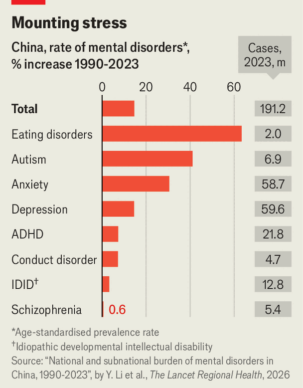

In China, treatment for mental-health problems is a luxury
The government wants to improve a patchy and uneven systyem
Aug 13th 2026
HALF OF XIAO Yao’s clients, who are mostly women aged between 20 and 40, do not tell their parents that they pay 500 yuan ($75) for counselling sessions. The 33-year-old psychological counsellor says that older generations tend to take mental health less seriously and ask: “This is just unhappiness, isn’t it? Aren’t you overthinking things?”
In a highly competitive society that has undergone deep economic and social change, many Chinese struggle with mental health. A new study shows a surge over the past three decades in mental illness. And though more sufferers now seek help, psychiatric services remain limited. Meanwhile a nascent therapy sector is largely unregulated and often hard to afford.
The study, published in the Lancet, a British medical journal, offers the most comprehensive estimate to date of mental disorders’ prevalence in China, with 191m cases in 2023 (equivalent to about one in seven Chinese). That was 46% more than in 1990, but after allowing for the country being older and more populous, the estimated prevalence was 14.6% higher. Because these are modelled estimates, based on sometimes sparse data and diagnoses, these figures are likely to be an underestimate of the true picture. Anxiety and depression are the most common illnesses, while eating disorders have grown at the fastest rate (see chart).

Though social stigma and a reluctance to acknowledge mental illness have long prevailed, calls for help are growing. The pandemic marked a turning-point, says Li Zhang of the University of California, Davis, author of a book on anxiety and psychotherapy in China. Lockdowns led to spikes in depression and anxiety; people grew more sympathetic to others suffering from mental illness and more accepting of their own problems, Ms Zhang says.
During the pandemic, many Chinese sought counselling for the first time. Unable to leave home, with the therapist’s sofa out of bounds, they jumped straight to the screen. Self-help and psychological services have boomed online. Tens of millions use apps selling counselling sessions and other courses. Many also take advantage of free resources: new government hotlines for psychological support got more than 700,000 calls in 2025 and 900,000 in the first half of this year.
Another paper in the Lancet, in 2021, found that of 1,007 Chinese surveyed with a depressive disorder, just 9.5% got treatment, while a mere 0.5% were treated adequately. The government now aims to build a nationwide system of psychological support and crisis intervention by 2030, giving more people access to drug-based treatments and psychotherapy. Plans include counselling rooms in every school, psychiatric services in at least one hospital in every county and more mental-health professionals.
Fears of social instability inform some of the official urgency. In June a private pilot crashed into Beijing’s tallest tower, killing himself, a rare security breach in the capital. Investigators claim the man suffered from anxiety and suicidal thoughts. In 2024 a spate of violent attacks, including vehicle rammings and stabbings against members of the public, was a source of official concern about mental health. Experts described the attacks as revenge on society, committed by men angry about their financial situation or perceived unfairness towards them. The Communist Party, with its mania for lists and slogans, stepped up the monitoring of “four-lack and five-loss” individuals, ie, those with no spouse, children, job or assets; or suffering from investment failures, life setbacks, relationship conflicts, emotional imbalance or mental disorders.
China’s very low rates of identifying and treating mental illness may at last be improving. Yuan Chengmei of Shanghai Mental Health Centre (SMHC), a top mental-health hospital, points to greater public awareness and better identification of milder cases of mental distress. Yet problems of capacity, affordability and sound regulation remain. China has far fewer pyschotherapists per head of population than the West. Dr Yuan says that even SMHC, with a much higher concentration of qualified staff than elsewhere in China, struggles to keep up with growing demand. One response at SMHC has been to institute more group counselling.
Elsewhere, however, counselling is a free-for-all, with no standardised licence requirements. Reports of fraud and malpractice abound. Online platforms are strengthening their requirements for trained and experienced counsellors, while professional associations promote their codes of ethics. But the government expends more energy hunting down AI chatbots that lead to emotional dependence than regulating real-life therapists.
Affordability remains a big problem. Many of those who need care most are least able to pay for it. Five years into a property crisis, local governments have less cash to invest in mental health.
Meanwhile, more needs to be done to promote awareness and acceptance. In China, shenjingbing, “mentally ill person,” remains a common insult. Younger people are chipping away against stubborn stigmas around mental health. To many of them, says Ms Xiao, counselling is like a fudaoke, just another remedial class that students take for hard subjects. Even so, as more people become open to counselling, they do not all understand what it entails. Counselling is a slow process, says Dr Yuan, but many clients think they will get better after just one or two sessions. And, Ms Xiao also points out, even those who do understand often reduce or give up their attendance after being sacked or seeing their pay cut. For now, treatment for mental illness remains a luxury that mainly the better-off can afford. ■
Subscribers can sign up to Drum Tower, our new weekly newsletter, to understand what the world makes of China—and what China makes of the world.